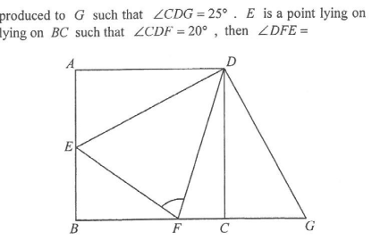

In the figure, ABCD is a square. BC is produced to G such that $\angle CDG = 25^\circ$. E is a point lying on AB such that $AE = CG$. If F is a point lying on BC such that $\angle CDF = 20^\circ$, then $\angle DFE =$

In $\triangle ADE$ and $\triangle CDG$:
$AE = CG$ (given) $\angle DAE = \angle DCG = 90^\circ$ (properties of square) $AD = CD$ (sides of square)$\therefore \triangle ADE \cong \triangle CDG$ (SAS)
Since the triangles are congruent, corresponding parts are equal:
$\angle ADE = \angle CDG = 25^\circ$ (corr. $\angle$s, $\cong \triangle$s) $DE = DG$ (corr. sides, $\cong \triangle$s)At vertex $D$ the right angle $\angle ADC = 90^\circ$ is split by $DE$ and $DF$:
$\angle EDF = \angle ADC - \angle ADE - \angle CDF$ $= 90^\circ - 25^\circ - 20^\circ = 45^\circ$On the other side of $DC$:
$\angle GDF = \angle CDG + \angle CDF = 25^\circ + 20^\circ = 45^\circ$Hence $\angle EDF = \angle GDF = 45^\circ$.
In $\triangle DEF$ and $\triangle DGF$:
$DE = DG$ (proved in Step 2) $\angle EDF = \angle GDF$ (proved in Step 3) $DF = DF$ (common side)$\therefore \triangle DEF \cong \triangle DGF$ (SAS)
Corresponding angles of the congruent triangles are equal:
$\angle DFE = \angle DFG$ (corr. $\angle$s, $\cong \triangle$s)In $\triangle CDF$, since $\angle DCF = 90^\circ$ (square) and $\angle CDF = 20^\circ$:
$\angle CFD = 180^\circ - \angle DCF - \angle CDF$ $= 180^\circ - 90^\circ - 20^\circ = 70^\circ$Since $B$, $F$, $C$, $G$ are collinear, $\angle DFG$ and $\angle CFD$ are the same angle, so
$\angle DFE = \angle DFG = 70^\circ$